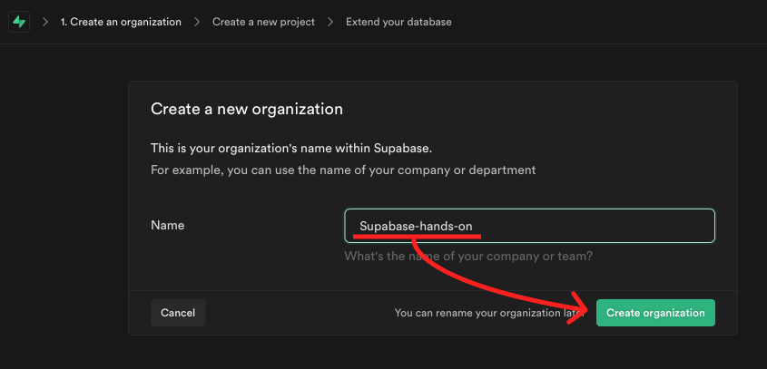
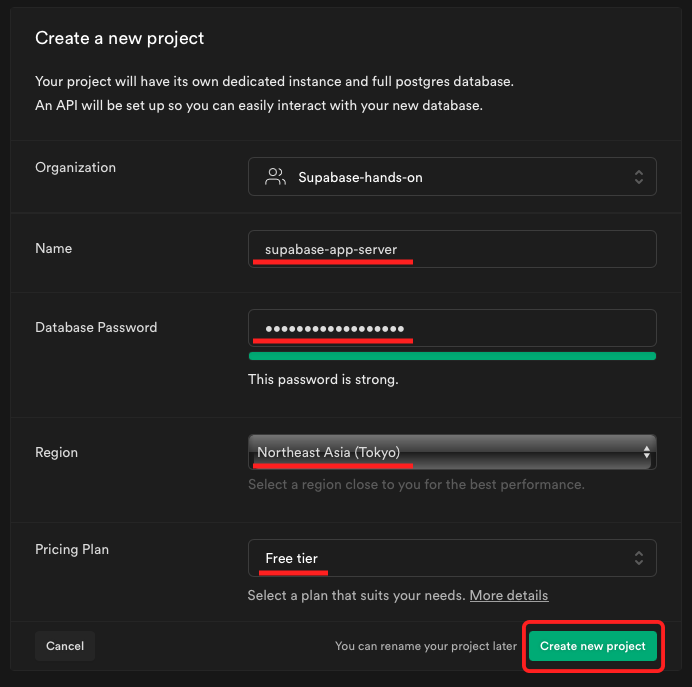
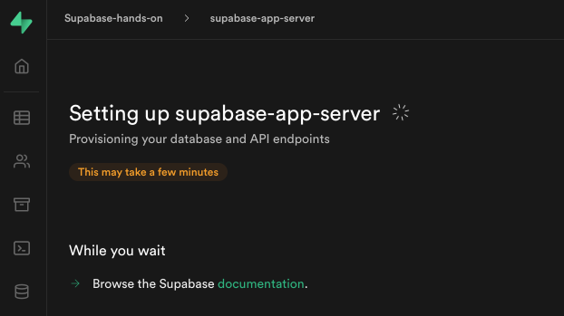
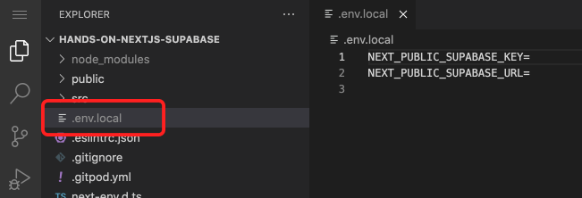
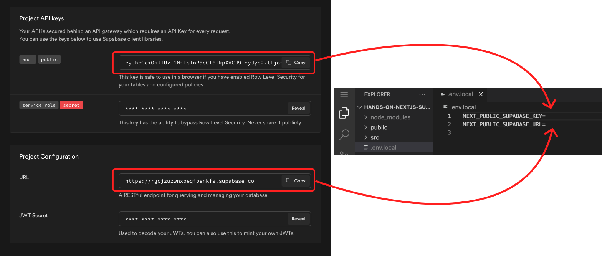
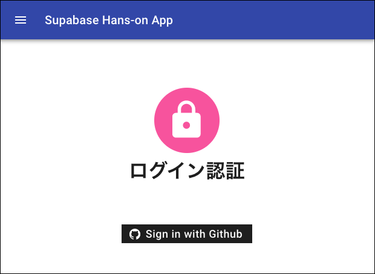

４．プロジェクトの作成
✅ Supabase のプロジェクトを作成していきます。
① [ New Project ] をクリック → [ New Organizations ]をクリック。

② Organization の名前入力 → [ Create Organization ]をクリック。
☝ Organization(組織)は、 プロジェクトをまとめるグループのようなものです。

③ プロジェクト名、DB パスワード、リージョンを選択 → 作成
| 項目 | 解説 | 値例 |
|---|---|---|
| name | プロジェクトの名前 | supabase-app-server |
| Database Password | PostgreSQL の DB パスワード | 任意の値 |
| Region | リージョン(サーバの場所) | Northeast Asia(Tokyo) |
| Pricing Plan | プランの選択 | Free tier |
☝ Database Password は、今回のハンズオンでは使用しませんが、忘れないほうが良いかも。
☝ Region は、一番距離が近い東京を選択することをオススメします。

④ プロジェクトの作成が開始されます。

✅ API キーを保存
① Gitpot の画面を開き、[.local.env]を開く。

② Supabase のページの下部に API キーと URL が表示されているので、[.local.env]に貼り付け。

以下のような感じになれば OK です。
NEXT_PUBLIC_SUPABASE_KEY=xxxxxxxxxxxxxxx.xxxxxxxxxxxxxxx.xxxxxxxxxxxxxx
NEXT_PUBLIC_SUPABASE_URL=https://xxxxxxxxxx.supabase.co
☝ この API と URL を頼りに、Next.js から Supabase へアクセスします。
③ yarn build → yarn start をして起動してみましょう。
ターミナルに、yarn build と入力して、エンターを押します。

Done という文字が確認できたら、 yarn start と入力してエンターを押します。
表示された http://localhost:3000 に、カーソルを合わせて「Ctrl+左クリック」を行い、ブラウザにアクセスしてください。

補足：ポップアップをクリックでも可能です。
右下に表示される "A service is available on port 3000"の "Open Browser" をクリックでもブラウザ表示できます。
④ 以下のようなトップ画面が表示されれば成功です！
